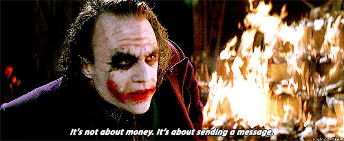
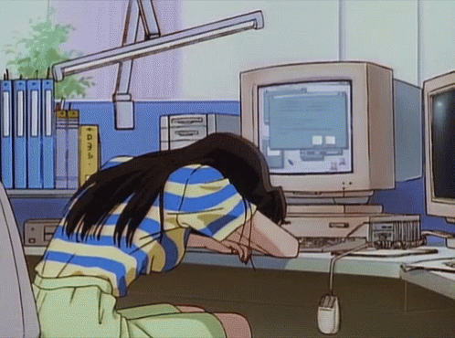
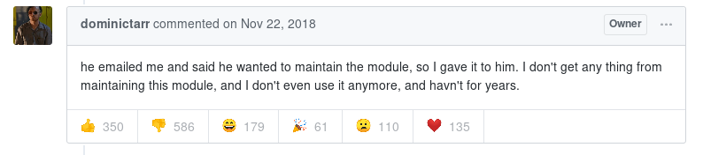
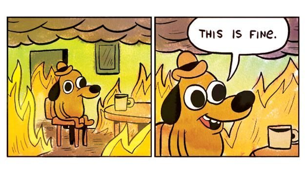

Libertades
- La libertad de usar el programa, con cualquier propósito
- La libertad de estudiar cómo funciona el programa y modificarlo, adaptándolo a las propias necesidades
- La libertad de distribuir copias del programa, con lo cual se puede ayudar a otros usuarios
- La libertad de mejorar el programa y hacer públicas esas mejoras a los demás, de modo que toda la comunidad se beneficie
- La libertad de usar el programa, con cualquier propósito
- La libertad de estudiar cómo funciona el programa y modificarlo, adaptándolo a las propias necesidades
- La libertad de distribuir copias del programa, con lo cual se puede ayudar a otros usuarios
- La libertad de mejorar el programa y hacer públicas esas mejoras a los demás, de modo que toda la comunidad se beneficie
Open Source es una cuestión de libertad, no de precio

Probablemente uses software open source todos los días
En tu escuela/universidad
En tu trabajo
En tus tiempos de ocio
Pero...
¿Pagaste algo por usarlo?
¿Diste algo a cambio por usarlo?
Software no crece en los árboles...
Es escrito por personas

Personas
Maintainers no son eternos
Tranvia Bus Factor
https://en.wikipedia.org/wiki/Bus_factor
Sus vidas continuán más allá de las computadoras
La personas tienen otras actividades, tienen familia, un trabajo, etc

Pierden el interés
Paquete de NPM infectado con backdoor
https://github.com/dominictarr/event-stream/issues/116

Stress (burnout)

I don't ever want to have to fight so hard for a
PEP and find that so many people despise my decisions...
I'm tired, and need a very long break.
Guido van Rossum, Julio 2018
https://mail.python.org/pipermail/python-committers/2018-July/005664.html
Personas...
Tu producto
Tu trabajo
Tu profesión
Tu empresa
Tu libertad
Tu seguridad
Dependen de software open source...
...y probablemente no estás haciendo nada para mantenerlo

¿Cómo puedo ayudar?
- Donando tu dinero
- Donando tu tiempo
- Donando tu conocimiento
- Donando tus habilidades
Donar...
s/Donando/Intercambiando/
- Intercambiando tu dinero
- Intercambiando tu tiempo
- Intercambiando tu conocimiento
- Intercambiando tus habilidades
Open source es más que computadoras
Sé amable y respetuoso con la comunidad, nadie les está pagando para leer tus comentarios quejándote
Ayuda difundiendo, organizando eventos, participa en tus comunidades locales
Y si, se puede generar dinero con proyectos open source
Varios proyectos son auto sustentables o generan ingresos a sus mantainers
- Neovim
- Django Rest Framework
- Read the Docs
- Y muchos más, pero aún así estos proyectos necesitan de tu ayuda
3. La libertad de mejorar el programa y hacer públicas esas mejoras a los demás,
de modo que toda la comunidad se beneficie
¿Estás listo para pasar de ser consumidor a ser colaborador?